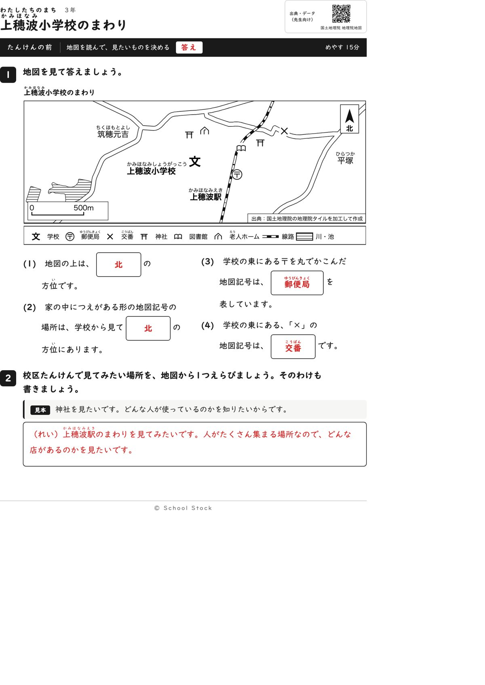
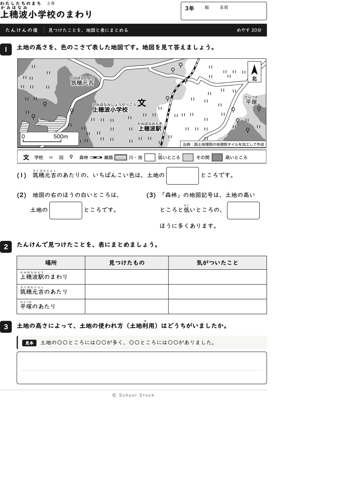
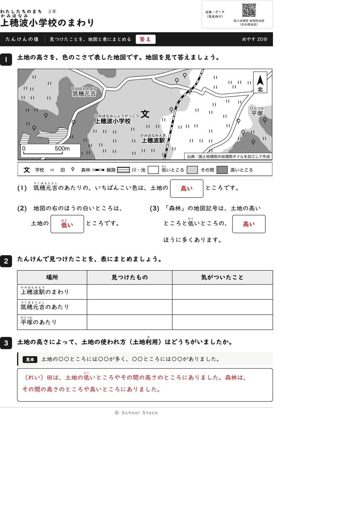
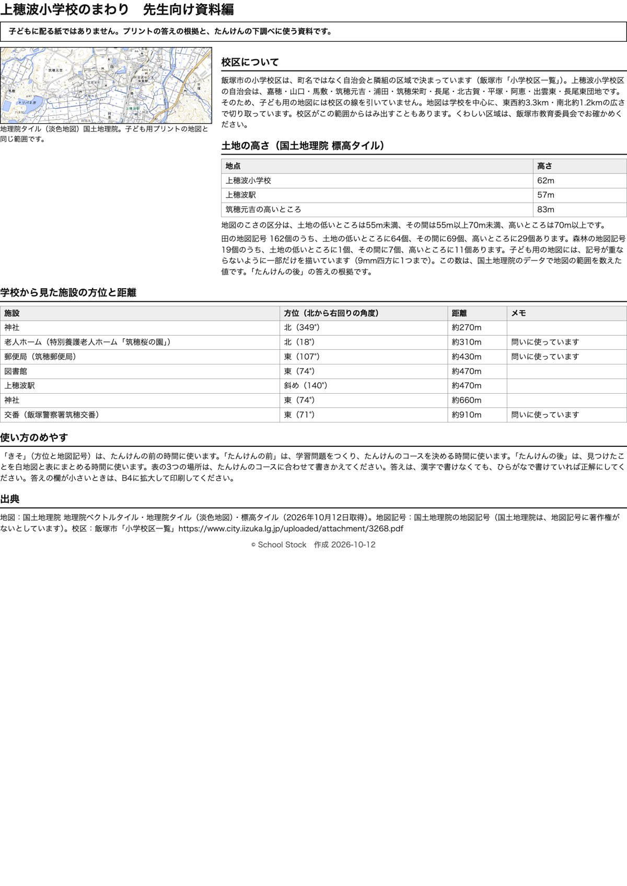

紙





直すところ
直すところはありません。
1回目のレビューで出た直し（3件・道具を直して作り直しました）
| 紙 | どこ | 何が困るか |
|---|---|---|
| たんけんの前 | (2)の問いの文（(3)(4)の「学校の東」「学校の北」も） | 地図に学校の記号が2つあり、名前があるのは南の1つだけです。北の記号から見ると老人ホームは南になり、答えが北と南に割れます。 |
| たんけんの前 | 地図の下の凡例の「川」（たんけんの後の凡例も同じ） | 地図の斜線の形は川ではなく池（トリバミ池）で、凡例の言葉と実際が合いません。 |
| 資料編 | 学校から見た施設の方位と距離の表 | 地図にあるもう1つの学校の行がなく、先生が問(2)のずれの理由を確かめられません。 |
2回目のレビューで出た直し（2件・道具を直して作り直しました）
| 紙 | どこ | 何が困るか |
|---|---|---|
| たんけんの後 | 地図の左下の縮尺「0 500m」（たんけんの前の地図も同じ位置） | 「500m」の字が、太い道の白い帯とため池の斜線の縁に乗っています。「たんけんの後」の地図ではとくに、「5」と「0」が道と模様に接して読みにくいです。 |
| 資料編 | 「土地の高さ」の節の、田と森林の記号の数の文 | 資料編には田162個、森林19個と書いてありますが、地図に描いてある記号は目で数えると田は100個前後、森林は11個前後で、ずっと少ないです。地図は9mmの区画に1つしか描かず、地名などの場所も避けているためです。先生が数えると合わず、答えの根拠を疑われます。 |
専門家団の声（いまの紙を見て）
香月八重筆頭・全学年
前は導入、後はまとめで用途が分かれています。この紙でつかむことは、低い所には田、高い所には森林が多い、と一文で言えます。2回目に求められた縮尺と資料編の2点は、どちらも直っています。
日隈耕平社会
神社は北349度、老人ホームは北18度、郵便局は東107度、交番は東71度で、地図と資料編が合っています。2回目に指摘した縮尺の字は白い地の箱に入り、道や池の模様に乗らなくなりました。資料編の数の食い違いにも「一部だけを描いています」の一文が入りました。気になるのは、図書館と郵便局の記号が線路に重なって線路が切れて見えることと、後の地図で森林の記号が線路と道の交わる所に乗っていることです。問いの答えは変わらないので好みの話にとどめます。
藤川湊すぐ終わる子
問(2)は形で探せて速く終わります。(3)(4)は記号を探す手間があり、早く終わった子が崩れにくいです。
田淵さくら例がないと止まる子
問(2)は凡例に同じ形があり、気づけば動けます。後の問3は見本の文型で書き出せます。表は見本の行がなく、駅のまわりの行は迷います。
轟大和読む前に諦める子
問(2)の「家の中につえがある形」は説明が長めで、読む前に諦める子はいます。ただ凡例の老人ホームの記号と見くらべれば分かります。赤字の答えで自分で丸つけできます。